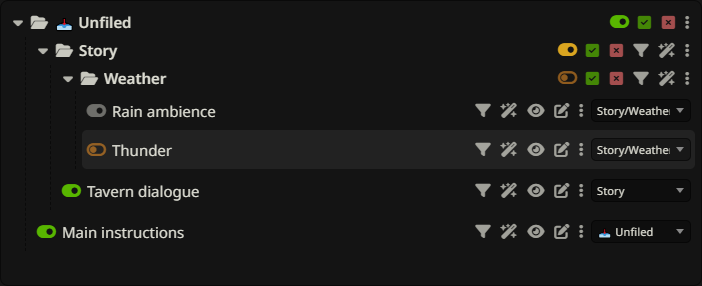
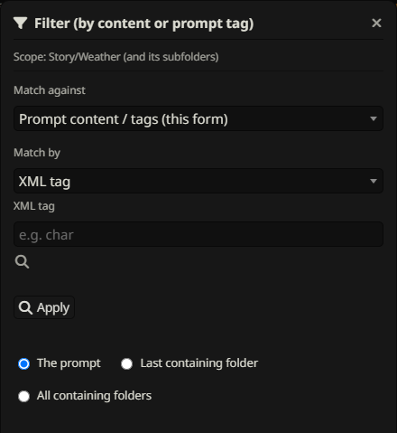
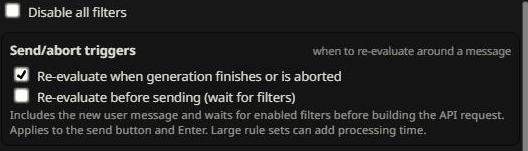
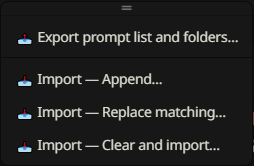
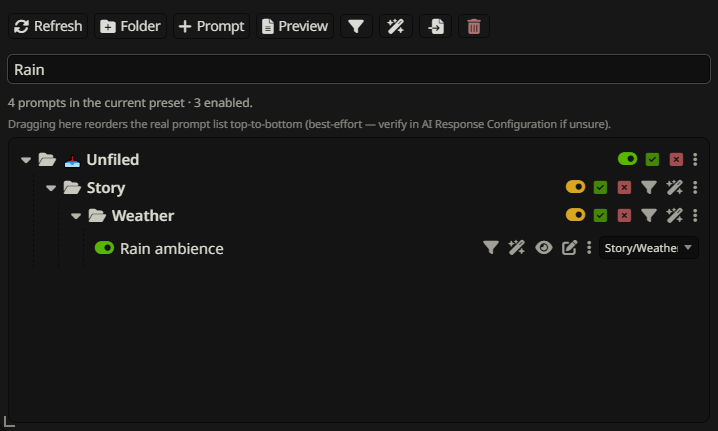

Troubleshooting
Diagnose visibility, matching, automation and transfer problems using the distinction between native state and extension metadata.
Panel or prompt list is missing

- Check that exactly one STPHE/Prompt Folders copy is installed and enabled, then reload.
- Use Show STPHE if the panel is minimized.
- Select Chat Completion and open AI Response Configuration to initialize the native Prompt Manager.
- Press Refresh, clear Search prompts, and expand collapsed folders.
- Confirm you are viewing the expected native preset/active prompt list.
If a SillyTavern update changed integration behavior, report its version along with STPHE’s version. Basic organization does not require a working generation API connection.
A toggle looks on but the prompt is absent


Check every containing folder for a master mute. Intended prompt states remain visible while an ancestor suppresses native activation. Preview contains native-enabled prompts only. A disabled child folder remains muted after restoring its parent.
Also inspect Auto Filter: a later evaluation or later rule can overwrite a manual change. Pause the master to diagnose this, remembering that pausing does not undo existing effects. Restore the relevant folder or set the desired prompt state explicitly.
Filter finds no matches or too many


Check scope, funnel exclusions and the chosen match type. Name search and content search are different. Tags must be saved and match a full tag name. Word is a substring; use regex word boundaries when needed. Regex expressions omit slash delimiters and are case-insensitive.
For XML, rescan the tag’s parameters after changing content, check attribute-name case, and make sure all selected attributes occur on the same tag instance. For Regex (list matched values), Apply again after edits and remember a specific value matches as a substring in cached content. Apply only finds results; Enable/Disable is a separate step.
Auto Filter behaves unexpectedly


Check the master switch, rule switch, group switches, wand exclusions, recent-message depth and numbered order. Depth 0 is always true. A false condition applies the opposite action. A disabled/deleted rule leaves its last effects in place.
Use Re-evaluate now on a small test rule. If a keyword in the new user message must affect the same outgoing request, enable before-send waiting. Generation-finished evaluation affects later use. If an imported effect uses manual IDs or folder paths from another setup, confirm those targets actually exist.
Import errors or missing metadata


Check that the file is valid JSON from a supported native or STPHE export, and import it into the correct collection. An Auto Filter-only file is not a prompt-list backup. A prompt-list file containing multiple active order lists must be reduced to one supported export rather than guessed.
For duplicate-name errors, rename ambiguous local items or export the intended identifiers. For missing tags/folders, check whether the file passed through the native importer/exporter or an older extension that cannot preserve those fields. Preset files store tag criteria, not assigned tags. Review the selected mode: Append deliberately keeps matching local entries.
Slow scans, busy state & content previews


Large lists can take time to scan or preview. STPHE reads native content directly when available and may briefly open the native editor as a fallback. Let the current operation finish rather than repeatedly clicking. Limit manual scope to a folder when appropriate.
Before-send waiting adds evaluation to the send path. Token estimates use approximately four characters per token and may differ greatly from SillyTavern’s tokenizer. Preview is stored prompt content, not a fully expanded API payload. Check native counts and request inspection for generation-specific details.
Report a reproducible problem

Include STPHE and SillyTavern versions, the exact control you used, expected and actual results, the selected match/target/import mode, and a minimal fictional example. For automation, include depth, action, effect and rule order. For a UI issue, show the relevant controls rather than the whole conversation.
Share a small export only after checking it for private prompt text and metadata. A useful report might say: “Word rain matches rainfall; I expected a whole word” — the guide can then point to the correct regex, or a reproducible bug can be fixed.